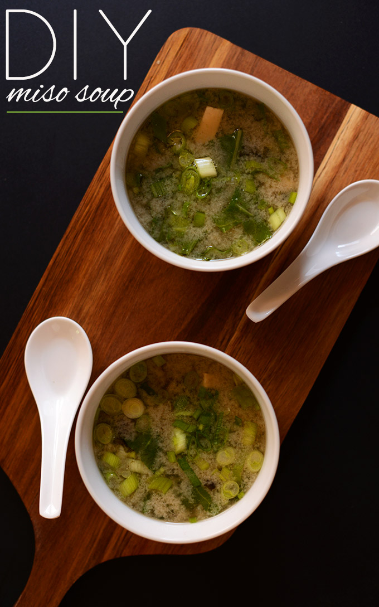

Recipe: Miso Soup

Description
Miso Soup is a traditional Japanese soup that can take many forms, but is quite simple on a fundamental level.
It consists of a broth made from simmmered bonito flakes (dried fish) and kumbu, a type of seaweed mixed with miso paste, a fermented soy bean mash.
Dashi can be made from the raw ingredients or purchased premade, the choice is up to you!d
It tastes like a salty, umami, from-the-ocean soup and can have many vegtables and protien options added!
Ingredients
- 4 cups Vegetable broth or water boiled with added dashi
- 1 nori sheet (seaweed/sushi nori//optional)
- 1/2 cup of chopped green onion
- 1/2 cup firm tofu (cubed)
- 1/2 cup of any other vegetable of choice!
Steps
- Place broth in a medium sauce pan and bring to a low simmer
- Add miso paste to a mesh strainer or add to a small bowl with hot water and whisk to ensure it does not clump
- To the broth, add tofu, green onions, and any other vegetable of choice and cook for about 5 min. Add nori and stir.
- Remove from heat and add miso paste from the bowl or smash through the mesh strainer with a spoon, stir to combine
- Taste and add more miso, sea salt, or soy sauce if desired. Serve warm, best when fresh.
Return to top
Return to main page